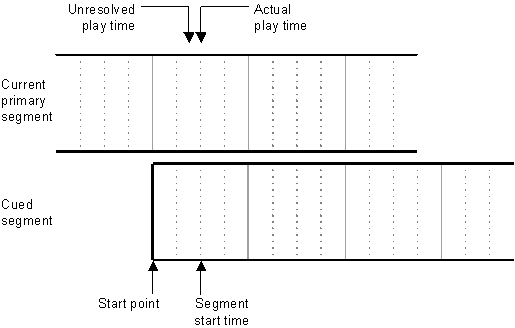

This section covers various aspects of timing in the playing of segments.
To clarify the relationship between times within segments and times within the performance, the following terms are used throughout this section:
Note Start markers and play markers are placed in the segment's marker track by the author and cannot be changed by the application. They can, however, be retrieved by using the GUID_Valid_Start_Time and GUID_Play_Marker parameters.
Segments normally play from the beginning.
If a repeat count is set by using IDirectMusicSegment8::SetRepeats, the entire segment repeats that number of times.
The play time is determined by two parameters of the IDirectMusicPerformance8::PlaySegmentEx method:
Rather than forcing the segment start time to the next grid, beat, or measure in the control segment, you might want the segment to start playing sooner, yet still match the rhythm of the current segment. You can make the segment do so by cuing its start point to a rhythmic boundary that has already passed. The rhythm in the cued segment is thus aligned with that in the current segment, and the new segment can start playing immediately.
To cue the segment in the past, use the DMUS_SEGF_ALIGN flag. Add one of DMUS_SEGF_GRID, DMUS_SEGF_BEAT, or DMUS_SEGF_MEASURE to cue the start point of the segment at the appropriate rhythmic boundary. Alternatively, you can use DMUS_SEGF_MARKER to align the start point to the most recently played play marker in the control segment.
Of course, when the start point is in the past, the segment start time has to be adjusted to fall in the present or the future. The performance uses the following rules to determine the segment start time. In all cases, "next" means "next possible"—that is, within the part of the segment that does not fall in the past.
Play markers and start markers allow greater flexibility in the cuing of segments, especially motifs. Suppose a motif is designed to sound best when it starts playing at the beginning of a measure in the primary segment. If the motif is cued with the DMUS_SEGF_MEASURE flag, there might be a significant delay before the next measure boundary is reached and the motif plays. But if the DMUS_SEGF_ALIGN flag is added, the motif can start playing sooner without violating the rhythm. Adding the DMUS_SEGF_MARKER flag ensures that the motif plays at an appropriate boundary within the control segment, rather than on just any measure, beat, or grid.
For information on how tempo changes can affect segment start times, see Clock Time vs. Music Time.
The following diagram shows how the timing is determined for a segment cued with the DMUS_SEGF_MEASURE, DMUS_SEGF_ALIGN, and DMUS_SEGF_VALID_START_BEAT flags. The solid vertical lines are measure boundaries, and the dotted lines are beat boundaries. The start point of the segment is aligned with the previous measure boundary in the current primary segment. The segment start time falls at the first beat in the cued segment after the unresolved play time.

Some events have both a logical time and an actual time. The actual time is when the event will take place, and the logical time represents the musical position where it belongs.
For example, a segment might contain a program change that belongs to the start of a beat. The logical time is the start of the beat. However, you want to make sure the program change takes place before the note on the beat is played, so you assign it a physical time that's a little earlier.
If the segment loops to the logical time (the start of that same beat), the program change will still go out.